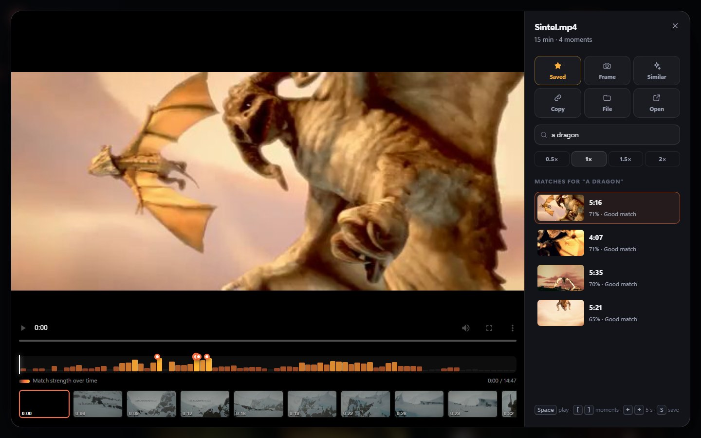
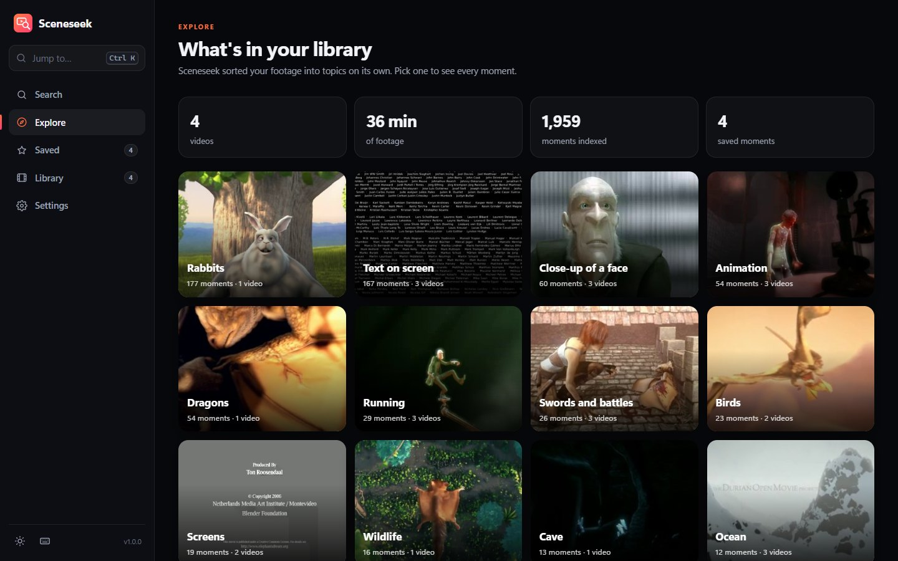
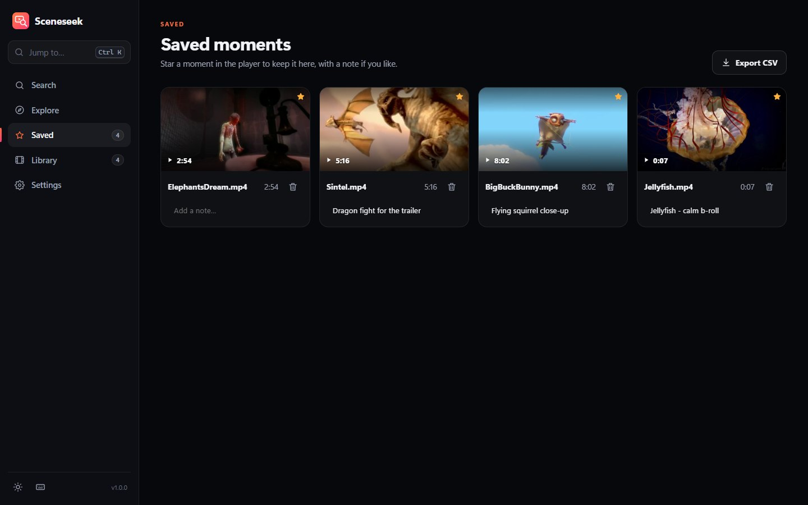
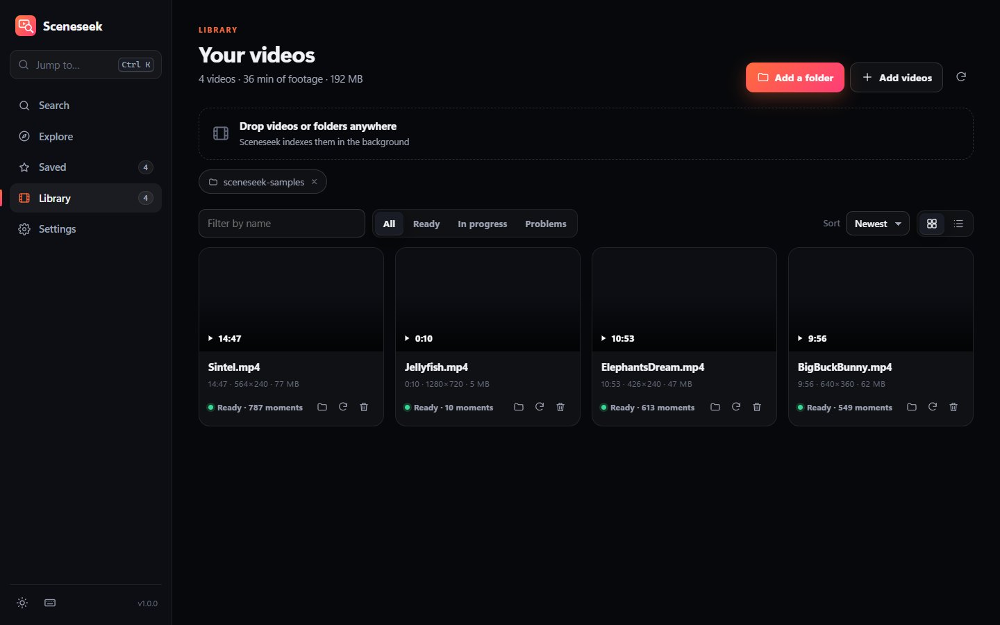
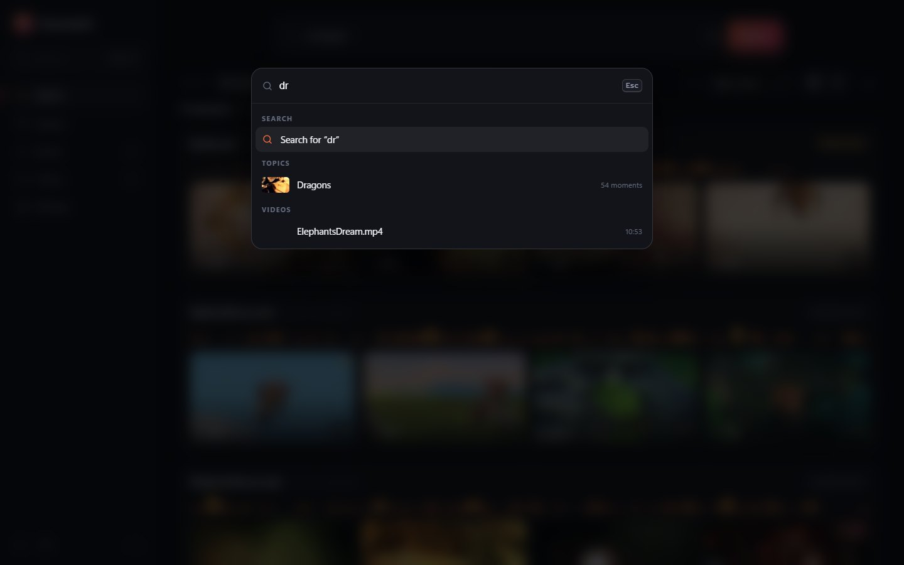

Search by description
Plain English works. Scenes, objects, colours, places and actions are all fair game, and results appear as you type.
Free · Private · Works offline
You remember what happened, not which file or when. Type it, and Sceneseek takes you to the exact second. It even sorts your footage into topics on its own. Everything stays on your computer.
Windows 10 and 11 · about 100 MB · free and open source

How it works
Point Sceneseek at the folders where your videos live. It indexes them quietly in the background and keeps your files exactly where they are.
Type “a red car at night” or “two people laughing”. Or drop in a picture and find footage that looks like it.
Click a result and the video plays from just before the match. No scrubbing through hours of footage.
Features
Plain English works. Scenes, objects, colours, places and actions are all fair game, and results appear as you type.
dog + snow asks for both. beach -night leaves night shots out. Sharper results without learning a query language.
Every video gets a strip showing where in its timeline the match is strongest. Click any point to play from there.
Sceneseek sorts your footage into topics on its own: beaches, faces, cars, text on screen and more. Browse without typing.
Star the shots you need, add a note, export the list. Your shortlist for an edit or a report, built while you search.
Paste a screenshot or drop a photo to find similar shots, or hit Similar on any result.
In the player, search one long recording on its own and step through every match with the keyboard.
Save the full-resolution frame of any moment as a picture in one click, ready for a thumbnail or a slide.
Point at a result to watch it silently before you open it. A scene strip lets you jump around a video in seconds.
A command palette (Ctrl K) for everything, plus shortcuts to play, step through matches and save.
Skips repeated scenes, runs in the background, can be paused, and only re-reads files that changed.
The AI runs on your computer. Your videos are never copied, uploaded or changed.
A closer look






Who it is for
Pull the right B-roll or the take you half remember without logging every clip by hand.
Go through interviews, field footage and recordings. Your material stays on your machine.
Find the part of a recorded lecture or demo where something was shown.
Find “the birthday where grandpa blew out the candles” across years of phone videos.
Search training videos, product demos and event footage without a cloud subscription.
It is open source and the code is small and readable. Fork it and make it yours.
Download
Unzip, run Sceneseek.exe, and add a folder. The first launch downloads the search model once (about 150 MB). After that it works fully offline.
Windows 10 or 11, 64-bit · 8 GB RAM recommended · no graphics card needed
Sceneseek is new and not code-signed yet, so Windows SmartScreen may say it does not recognise the app. Choose More info, then Run anyway. You can check the download against the published checksum, and the full source code is on GitHub.
The SHA-256 checksum is published next to the file on the release page. In PowerShell, Get-FileHash Sceneseek-*.zip prints the one for your copy.
The app is plain Python. With Python 3.10 or newer, run pip install -r requirements.txt and python main.py. Full steps are in the README.
Questions
Yes. Sceneseek is free and open source under the MIT licence. There is no account, subscription or ads.
No. Indexing and searching happen on your computer, and the app only answers requests from your own machine. The one download is the search model, once, on first launch.
It matches what things look like: scenes, objects, colours, places and actions. It does not listen to speech, so it cannot search by what people say, and it is not good at reading small text on screen. Very short moments can be missed at the default setting; you can raise the detail in Settings.
It depends on your processor. On our test PC a 10 minute video took about a minute and a half, so an hour of footage takes around ten minutes. Indexing runs in the background and finished videos are searchable straight away. Each video is only processed once.
MP4, MOV, MKV, AVI, WebM, WMV and others can be indexed and searched. The built-in player plays what your system supports; for anything else, the Open button hands the file to your usual player.
Very little: about 1 KB per indexed moment, so a thousand hours of footage stays well under a few GB including thumbnails. Your videos are not copied.
Yes, the MIT licence allows commercial use. The AI model is OpenAI's open CLIP model, also MIT licensed.